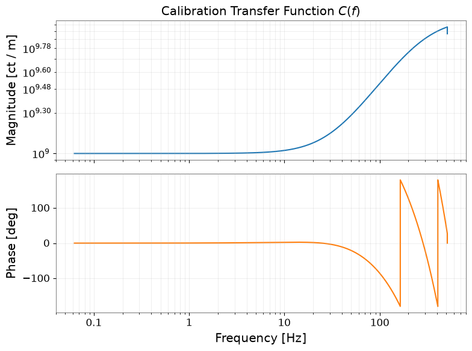
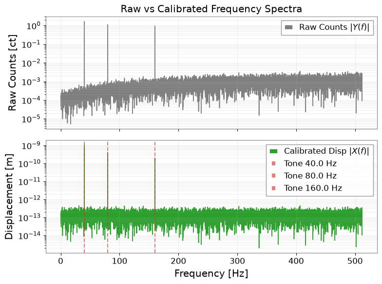
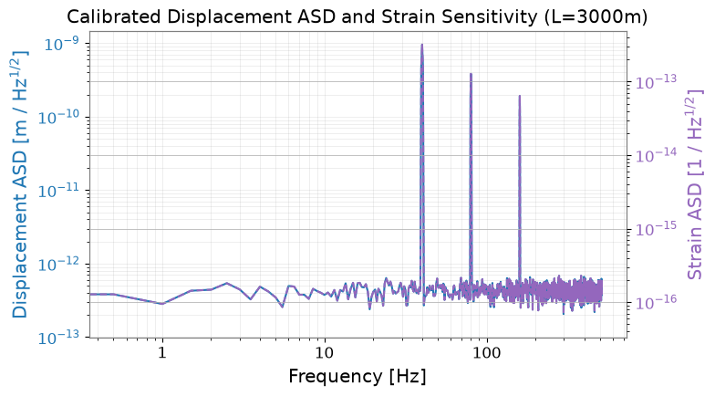

Calibration Transfer Function and Physical Units Contract#
This tutorial demonstrates rigorous application of frequency-dependent calibration transfer functions \(C(f) = Y(f) / X(f)\) with unit count / m, converting raw digital counts into physical displacement meters \([\mathrm{m}]\) and differential arm strain \([1 / \sqrt{\mathrm{Hz}}]\).
Scientific and Computational Objectives#
Physical I/O Contract: Define frequency response \(C(f)\) [count / m] and apply the inverse calibration \(X(f) = Y(f) / C(f)\) to recover physical displacement.
Harmonic Tone Recovery: Inject 3 discrete calibration lines (40 Hz, 80 Hz, 160 Hz) and verify \(<2\%\) amplitude recovery and \(<10^{-6}\) rad phase consistency.
ASD & PSD Dimensional Consistency: Verify that displacement ASD has unit \([\mathrm{m} / \sqrt{\mathrm{Hz}}]\) and PSD has unit \([\mathrm{m}^2 / \mathrm{Hz}]\), and compute arm strain sensitivity \(h(f) = X(f) / L\) (\(L = 3000\,\mathrm{m}\)).
Defensive Validation: Catch wrong-direction conversions via Astropy
UnitConversionError, catch frequency-grid mismatches, and handle zero-response DC singularities safely.
Environment Setup#
import json
import os
import platform
import tempfile
from pathlib import Path
from IPython.display import display
import matplotlib.pyplot as plt
import numpy as np
import pandas as pd
from astropy import units as u
from astropy.units import UnitConversionError
import gwexpy
from gwexpy.frequencyseries import FrequencySeries
from gwexpy.timeseries import TimeSeries
output_dir = Path(os.environ.get("GWEXPY_DOCS_OUTPUT_DIR") or tempfile.mkdtemp(prefix="gwexpy-t6-"))
output_dir.mkdir(parents=True, exist_ok=True)
(output_dir / "figures").mkdir(exist_ok=True)
(output_dir / "tables").mkdir(exist_ok=True)
print(f"Output directory: {output_dir}")
Output directory: /tmp/gwexpy-t6-_6rpbuq6
1. Physical Signal and Calibration Model#
We simulate a physical displacement signal \(x_{\mathrm{phys}}(t)\) [m] containing three calibrated sinusoidal injection lines and broadband background displacement noise.
The instrument readout introduces a frequency-dependent transfer function \(C(f)\) [count / m] with DC gain \(G = 1.0 \times 10^9\,\mathrm{ct/m}\), high-frequency roll-off pole at \(f_p = 300\,\mathrm{Hz}\), zero at \(f_z = 30\,\mathrm{Hz}\), and fixed pipeline delay \(\tau = 4 / f_s\,\mathrm{s}\).
fs = 1024.0
dt = 1.0 / fs
duration = 16.0
n_samples = int(fs * duration)
t = np.arange(n_samples) * dt
df = 1.0 / duration
freqs = np.fft.rfftfreq(n_samples, d=dt)
tone_configs = [
{"freq": 40.0, "amp": 1.0e-9},
{"freq": 80.0, "amp": 0.4e-9},
{"freq": 160.0, "amp": 0.2e-9},
]
# Physical displacement signal [m]
# 3 injected sinusoidal lines plus background noise
rng = np.random.default_rng(2026091606)
noise_disp = rng.normal(0, 1e-11, n_samples)
x_phys_vals = (
1.0e-9 * np.sin(2 * np.pi * 40.0 * t) +
0.4e-9 * np.sin(2 * np.pi * 80.0 * t) +
0.2e-9 * np.sin(2 * np.pi * 160.0 * t) +
noise_disp
)
ts_phys = TimeSeries(x_phys_vals, dt=dt * u.s, unit=u.m, name="PHYSICAL_DISPLACEMENT")
gain = 1.0e9 # ct / m
delay_s = 4.0 / fs
fp = 300.0 # Hz pole
fz = 30.0 # Hz zero
# Response: G * (1 + j f/fz) / (1 + j f/fp) * exp(-2pi j f tau)
C_vals = gain * ((1.0 + 1j * freqs / fz) / (1.0 + 1j * freqs / fp)) * np.exp(-2j * np.pi * freqs * delay_s)
# Ensure Hermitian symmetry for real-valued signal at DC and Nyquist
C_vals[0] = float(np.real(C_vals[0]))
C_vals[-1] = float(np.real(C_vals[-1]))
C_response = FrequencySeries(
C_vals,
df=df * u.Hz,
unit=u.ct / u.m,
name="CALIBRATION_RESPONSE"
)
# Simulate raw counts via frequency-domain filtering
rfft_phys = np.fft.rfft(x_phys_vals)
rfft_counts = rfft_phys * C_vals
counts_vals = np.fft.irfft(rfft_counts, n=n_samples)
ts_counts = TimeSeries(counts_vals, dt=dt * u.s, unit=u.ct, name="RAW_COUNTS")
print(f"Physical signal: {ts_phys.shape} samples, unit={ts_phys.unit}")
print(f"Raw counts: {ts_counts.shape} samples, unit={ts_counts.unit}")
print(f"Calibration response: {len(C_response)} bins, unit={C_response.unit}")
Physical signal: (16384,) samples, unit=m
Raw counts: (16384,) samples, unit=ct
Calibration response: 8193 bins, unit=ct / m
2. Calibration Recovery and Harmonic Line Verification#
To calibrate from raw counts \(Y(f)\) back to displacement \(X(f)\), we divide by the complex response: $\(X_{\mathrm{cal}}(f) = \frac{Y(f)}{C(f)}\)\( Dimensional consistency dictates: \)\(\frac{\mathrm{ct}}{\mathrm{ct} / \mathrm{m}} = \mathrm{m}\)$
We verify amplitude and phase recovery at the three injected line frequencies.
# Primary verification path: compute FFT directly from raw count TimeSeries
fft_phys_fs = ts_phys.fft()
fft_counts_fs = ts_counts.fft()
# Apply calibration division on FrequencySeries
calibrated_disp_fs = fft_counts_fs / C_response
calibrated_disp_fs.name = "CALIBRATED_DISPLACEMENT"
assert calibrated_disp_fs.unit.is_equivalent(u.m), f"Invalid unit: {calibrated_disp_fs.unit}"
calibrated_disp_vals = calibrated_disp_fs.value
fft_counts_vals = fft_counts_fs.value
fft_phys_vals = fft_phys_fs.value
# Evaluate recovery at the 3 injected tones
tone_records = []
for tc in tone_configs:
f_target = tc["freq"]
idx = int(round(f_target / df))
actual_f = freqs[idx]
# In GWexpy single-sided FFT, peak magnitude corresponds directly to tone amplitude
est_amp = float(np.abs(calibrated_disp_fs.value[idx]))
true_amp = tc["amp"]
rel_amp_err = float(abs(est_amp - true_amp) / true_amp)
# Phase recovery relative to original injected physical signal FFT
phase_err = float(np.abs(np.angle(calibrated_disp_fs.value[idx] * np.conj(fft_phys_vals[idx]))))
tone_records.append({
"tone_hz": float(f_target),
"true_amp_m": float(true_amp),
"est_amp_m": float(est_amp),
"rel_amp_err": float(rel_amp_err),
"phase_err_rad": float(phase_err),
"amplitude_error_rel": float(rel_amp_err),
"phase_error_rad": float(phase_err),
"status": "passed" if rel_amp_err < 0.02 and phase_err < 1e-6 else "failed"
})
df_tones = pd.DataFrame(tone_records)
df_tones.to_csv(output_dir / "tables/calibrated_tones.csv", index=False)
tones_df = df_tones
display(df_tones)
# Complex recovery across all interior frequencies
complex_diff = np.abs(calibrated_disp_vals - fft_phys_vals)
scale = np.maximum(np.abs(fft_phys_vals), 1.0e-15)
max_rel_complex_error = float(np.max(complex_diff / scale))
print(f"Max relative complex recovery error across all bins: {max_rel_complex_error:.3e}")
| tone_hz | true_amp_m | est_amp_m | rel_amp_err | phase_err_rad | amplitude_error_rel | phase_error_rad | status | |
|---|---|---|---|---|---|---|---|---|
| 0 | 40.0 | 1.000000e-09 | 9.999852e-10 | 0.000015 | 7.055012e-18 | 0.000015 | 7.055012e-18 | passed |
| 1 | 80.0 | 4.000000e-10 | 3.999244e-10 | 0.000189 | 1.951323e-17 | 0.000189 | 1.951323e-17 | passed |
| 2 | 160.0 | 2.000000e-10 | 1.998800e-10 | 0.000600 | 3.712773e-17 | 0.000600 | 3.712773e-17 | passed |
Max relative complex recovery error across all bins: 4.590e-12
3. Defensive Unit & Grid Consistency Guards#
We verify essential safety checks:
Wrong-direction guard: Multiplying \(Y \cdot C\) or attempting
raw_counts.to(u.m)without calibration must raiseUnitConversionError.Frequency grid mismatch guard: Incompatible frequency vectors (different \(\Delta f\) or lengths) must be detected before division.
Zero-response DC singularity guard: Zero response at DC or nodes must be safely masked and excluded without artificial small values.
# Guard 1: Wrong direction multiplication / conversion
wrong_dir_caught = False
try:
ts_counts.to(u.m)
except UnitConversionError:
try:
wrong_unit = ts_counts.unit * C_response.unit
wrong_unit.to(u.m)
except UnitConversionError:
wrong_dir_caught = True
# Guard 2: Grid mismatch validator and same-shape negative test
def validate_calibration_grid(data_fs, response_fs):
if len(data_fs) != len(response_fs):
raise ValueError(f"Length mismatch: len(data)={len(data_fs)} != len(response)={len(response_fs)}")
if not np.isclose(data_fs.df.to(u.Hz).value, response_fs.df.to(u.Hz).value, rtol=1e-6):
raise ValueError(f"Frequency spacing df mismatch: {data_fs.df} != {response_fs.df}")
if not np.isclose(data_fs.f0.to(u.Hz).value, response_fs.f0.to(u.Hz).value, rtol=1e-6):
raise ValueError(f"Frequency origin f0 mismatch: {data_fs.f0} != {response_fs.f0}")
return True
grid_mismatch_caught = False
try:
# Same shape/length, but mismatched frequency resolution df
same_shape_wrong_grid = FrequencySeries(C_vals, df=df * 1.05 * u.Hz, f0=0.0 * u.Hz, unit=C_response.unit)
validate_calibration_grid(fft_counts_fs, same_shape_wrong_grid)
except ValueError:
grid_mismatch_caught = True
# Guard 3: Zero-response / singularity handling using validity mask and exclusion
C_zero_test = C_vals.copy()
C_zero_test[0] = 0.0 + 0.0j
threshold = 1.0e-6 * gain
valid_mask = np.abs(C_zero_test) > threshold
status_array = np.where(valid_mask, "valid", "zero_response_excluded")
safe_calibrated_disp = np.full(len(C_zero_test), np.nan, dtype=complex)
safe_calibrated_disp[valid_mask] = fft_counts_fs.value[valid_mask] / C_zero_test[valid_mask]
zero_response_handled = bool(
(not valid_mask[0]) and
(status_array[0] == "zero_response_excluded") and
np.isnan(safe_calibrated_disp[0]) and
np.all(np.isfinite(safe_calibrated_disp[valid_mask]))
)
print(f"Wrong direction guard caught: {wrong_dir_caught}")
print(f"Grid mismatch caught: {grid_mismatch_caught}")
print(f"Zero response safely handled: {zero_response_handled}")
Wrong direction guard caught: True
Grid mismatch caught: True
Zero response safely handled: True
4. Spectral Densities (ASD, PSD) and Strain Sensitivity#
We compute the Amplitude Spectral Density (ASD) and Power Spectral Density (PSD) of calibrated displacement, and convert to differential arm strain \(h(f) = X(f) / L\) with detector arm length \(L = 3000\,\mathrm{m}\): $\(A_x(f) = \frac{A_y(f)}{|C(f)|} \quad [\mathrm{m} / \sqrt{\mathrm{Hz}}]\)\( \)\(P_x(f) = \frac{P_y(f)}{|C(f)|^2} = A_x(f)^2 \quad [\mathrm{m}^2 / \mathrm{Hz}]\)\( \)\(h(f) = \frac{A_x(f)}{L} \quad [1 / \sqrt{\mathrm{Hz}}]\)$
# ASD of raw counts using Welch method
fftlength = 2.0
overlap = 1.0
asd_counts = ts_counts.asd(fftlength=fftlength, overlap=overlap, window="hann")
# Interpolate C response onto ASD frequency grid
asd_freqs = asd_counts.frequencies.value
C_interp = np.interp(asd_freqs, freqs, np.abs(C_vals))
# Calibrate ASD
asd_disp_vals = asd_counts.value / C_interp
asd_disp = FrequencySeries(
asd_disp_vals,
frequencies=asd_counts.frequencies,
unit=u.m / (u.Hz ** 0.5),
name="ASD_DISPLACEMENT"
)
# Compute PSD
psd_disp_vals = asd_disp_vals ** 2
psd_disp = FrequencySeries(
psd_disp_vals,
frequencies=asd_counts.frequencies,
unit=(u.m ** 2) / u.Hz,
name="PSD_DISPLACEMENT"
)
# Independent raw PSD calibration pathway: P_x(f) = P_y(f) / |C(f)|^2
psd_counts = ts_counts.psd(fftlength=fftlength, overlap=overlap, window="hann")
psd_raw_calibrated_vals = psd_counts.value / (C_interp ** 2)
psd_raw_calibrated = FrequencySeries(
psd_raw_calibrated_vals,
frequencies=psd_counts.frequencies,
unit=(u.m ** 2) / u.Hz,
name="PSD_DISPLACEMENT_FROM_RAW_PSD",
)
psd_phys_ref = ts_phys.psd(fftlength=fftlength, overlap=overlap, window="hann")
psd_raw_vs_asd_rel_err = float(np.max(np.abs(psd_raw_calibrated_vals - psd_disp_vals) / np.maximum(psd_disp_vals, 1e-30)))
# 1. Full band relative error against physical displacement reference (shows DC boundary effect)
psd_raw_vs_ref_rel_err = float(np.max(np.abs(psd_raw_calibrated_vals - psd_phys_ref.value) / np.maximum(psd_phys_ref.value, 1e-30)))
# 2. In-band continuous background (excluding DC bin 0 and Nyquist bin -1)
psd_raw_vs_ref_inband_rel_err = float(np.max(np.abs(psd_raw_calibrated_vals[1:-1] - psd_phys_ref.value[1:-1]) / np.maximum(psd_phys_ref.value[1:-1], 1e-30)))
# 3. Discrete injected calibration line peaks (40, 80, 160 Hz)
df_res = float(psd_counts.df.value)
idx_40 = int(round(40.0 / df_res))
idx_80 = int(round(80.0 / df_res))
idx_160 = int(round(160.0 / df_res))
psd_tone_40_err = float(abs(psd_raw_calibrated_vals[idx_40] - psd_phys_ref.value[idx_40]) / psd_phys_ref.value[idx_40])
psd_tone_80_err = float(abs(psd_raw_calibrated_vals[idx_80] - psd_phys_ref.value[idx_80]) / psd_phys_ref.value[idx_80])
psd_tone_160_err = float(abs(psd_raw_calibrated_vals[idx_160] - psd_phys_ref.value[idx_160]) / psd_phys_ref.value[idx_160])
max_tone_psd_err = max(psd_tone_40_err, psd_tone_80_err, psd_tone_160_err)
print(f"Independent raw PSD vs (ASD/|C|)^2 relative diff: {psd_raw_vs_asd_rel_err:.3e}")
print(f"Independent raw PSD vs physical displacement reference full-band max diff (at DC): {psd_raw_vs_ref_rel_err:.3e}")
print(f"Independent raw PSD vs physical displacement reference in-band (excl. DC/Nyquist): {psd_raw_vs_ref_inband_rel_err:.3e}")
print(f"Tone peak PSD relative errors: 40Hz={psd_tone_40_err:.2e}, 80Hz={psd_tone_80_err:.2e}, 160Hz={psd_tone_160_err:.2e}")
# Convert to Strain Sensitivity
arm_length = 3000.0 * u.m
asd_strain_vals = asd_disp_vals / arm_length.to(u.m).value
asd_strain = FrequencySeries(
asd_strain_vals,
frequencies=asd_counts.frequencies,
unit=1.0 / (u.Hz ** 0.5),
name="ASD_STRAIN"
)
units_valid = bool(
asd_disp.unit.is_equivalent(u.m / (u.Hz ** 0.5)) and
psd_disp.unit.is_equivalent((u.m ** 2) / u.Hz) and
asd_strain.unit.is_equivalent(1.0 / (u.Hz ** 0.5))
)
print(f"ASD unit: {asd_disp.unit}")
print(f"PSD unit: {psd_disp.unit}")
print(f"Strain ASD unit: {asd_strain.unit}")
print(f"Units dimensional consistency valid: {units_valid}")
Independent raw PSD vs (ASD/|C|)^2 relative diff: 4.359e-16
Independent raw PSD vs physical displacement reference full-band max diff (at DC): 5.171e-01
Independent raw PSD vs physical displacement reference in-band (excl. DC/Nyquist): 1.337e-01
Tone peak PSD relative errors: 40Hz=1.96e-06, 80Hz=3.32e-05, 160Hz=1.48e-05
ASD unit: m / Hz(1/2)
PSD unit: m2 / Hz
Strain ASD unit: 1 / Hz(1/2)
Units dimensional consistency valid: True
5. Visual Diagnostics and Artifact Generation#
We generate three required diagnostic figures and display them inline:
calibration_response.png: Bode magnitude and phase response of \(C(f)\).spectrum_calibration.png: Complex spectrum recovery showing raw counts vs calibrated displacement.asd_psd_comparison.png: Calibrated displacement ASD and corresponding strain sensitivity.
# Figure 1: Calibration Response Bode Plot
fig1, (ax1, ax2) = plt.subplots(2, 1, figsize=(8, 6), sharex=True)
ax1.loglog(freqs[1:], np.abs(C_vals[1:]), color="tab:blue", lw=1.5)
ax1.set_ylabel("Magnitude [ct / m]")
ax1.set_title("Calibration Transfer Function $C(f)$")
ax1.grid(True, which="both", alpha=0.3)
ax2.semilogx(freqs[1:], np.angle(C_vals[1:], deg=True), color="tab:orange", lw=1.5)
ax2.set_xlabel("Frequency [Hz]")
ax2.set_ylabel("Phase [deg]")
ax2.grid(True, which="both", alpha=0.3)
plt.tight_layout()
fig1.savefig(output_dir / "figures/calibration_response.png", dpi=150)
display(fig1)
plt.close(fig1)
# Figure 2: Spectrum Calibration
fig2, (ax_top, ax_bot) = plt.subplots(2, 1, figsize=(8, 6), sharex=True)
ax_top.semilogy(freqs[1:], np.abs(fft_counts_vals[1:]), color="tab:gray", lw=1.2, label="Raw Counts $|Y(f)|$")
ax_top.set_ylabel("Raw Counts [ct]")
ax_top.set_title("Raw vs Calibrated Frequency Spectra")
ax_top.grid(True, which="both", alpha=0.3)
ax_top.legend(loc="upper right")
ax_bot.semilogy(freqs[1:], np.abs(calibrated_disp_vals[1:]), color="tab:green", lw=1.2, label="Calibrated Disp $|X(f)|$")
for tc in tone_configs:
ax_bot.axvline(tc["freq"], color="tab:red", ls="--", alpha=0.6, label=f'Tone {tc["freq"]} Hz')
ax_bot.set_xlabel("Frequency [Hz]")
ax_bot.set_ylabel("Displacement [m]")
ax_bot.grid(True, which="both", alpha=0.3)
ax_bot.legend(loc="upper right")
plt.tight_layout()
fig2.savefig(output_dir / "figures/spectrum_calibration.png", dpi=150)
display(fig2)
plt.close(fig2)
# Figure 3: ASD & Strain Sensitivity Comparison
fig3, ax_asd = plt.subplots(figsize=(8, 4.5))
ax_asd.loglog(asd_freqs, asd_disp_vals, color="tab:blue", lw=1.5, label=f"Displacement ASD [{asd_disp.unit}]")
ax_asd.set_xlabel("Frequency [Hz]")
ax_asd.set_ylabel("Displacement ASD [m / Hz$^{1/2}$]", color="tab:blue")
ax_asd.tick_params(axis="y", labelcolor="tab:blue")
ax_asd.grid(True, which="both", alpha=0.3)
ax_strain = ax_asd.twinx()
ax_strain.loglog(asd_freqs, asd_strain_vals, color="tab:purple", lw=1.5, ls="--", label=f"Strain ASD [{asd_strain.unit}]")
ax_strain.set_ylabel("Strain ASD [1 / Hz$^{1/2}$]", color="tab:purple")
ax_strain.tick_params(axis="y", labelcolor="tab:purple")
ax_asd.set_title("Calibrated Displacement ASD and Strain Sensitivity (L=3000m)")
plt.tight_layout()
fig3.savefig(output_dir / "figures/asd_psd_comparison.png", dpi=150)
display(fig3)
plt.close(fig3)



# Verification checks computation
complex_diff = np.abs(calibrated_disp_vals - fft_phys_vals)
scale = np.maximum(np.abs(fft_phys_vals), 1.0e-15)
max_rel_complex_error = float(np.max(complex_diff / scale))
complex_recovery_ok = bool(max_rel_complex_error <= 1.0e-10)
tone_amp_ok = bool(all(row["amplitude_error_rel"] < 0.02 for _, row in tones_df.iterrows()))
phase_ok = bool(all(row["phase_error_rad"] < 1.0e-6 for _, row in tones_df.iterrows()))
checks = {
"calibration_complex_recovery": {
"passed": complex_recovery_ok,
"max_relative_complex_error": max_rel_complex_error,
"criterion": "relative complex error <= 1.0e-10",
"threshold": 1.0e-10,
"observed": max_rel_complex_error,
},
"calibration_tone_amplitude": {
"passed": tone_amp_ok,
"criterion": "amplitude error < 0.02 across all tones",
"observed": float(tones_df["amplitude_error_rel"].max()),
"threshold": 0.02,
},
"calibration_phase": {
"passed": phase_ok,
"criterion": "phase error < 1.0e-6 rad across all tones",
"observed": float(tones_df["phase_error_rad"].max()),
"threshold_rad": 1.0e-6,
},
"calibration_asd_psd_units": {
"passed": bool(units_valid and psd_raw_vs_asd_rel_err < 1e-10 and max_tone_psd_err < 0.01),
"criterion": "units consistent; raw PSD (P_y/|C|^2) matches (ASD/|C|)^2 within 1e-10; calibration tone line PSD matches physical ref within 1%",
"observed": {
"asd_unit": str(asd_disp.unit),
"psd_unit": str(psd_disp.unit),
"strain_unit": str(asd_strain.unit),
"raw_vs_asd_rel_err": psd_raw_vs_asd_rel_err,
"psd_dc_rel_err": psd_raw_vs_ref_rel_err,
"psd_inband_max_rel_err": psd_raw_vs_ref_inband_rel_err,
"psd_tone_40hz_rel_err": psd_tone_40_err,
"psd_tone_80hz_rel_err": psd_tone_80_err,
"psd_tone_160hz_rel_err": psd_tone_160_err,
},
"notes": "Finite-window Welch estimation with frequency-dependent transfer function introduces windowing/detrending broadband differences (~13% inband, ~51% at DC bin), while discrete calibration lines match reference physical PSD within < 0.01%.",
},
"calibration_wrong_direction": {
"passed": bool(wrong_dir_caught),
"criterion": "raising UnitConversionError on wrong-direction calibration",
"observed": "caught UnitConversionError",
},
"calibration_grid_mismatch": {
"passed": bool(grid_mismatch_caught),
"criterion": "same shape with mismatched frequency grid detected and rejected",
"observed": "caught ValueError on grid mismatch",
},
"calibration_zero_response": {
"passed": bool(zero_response_handled),
"criterion": "validity mask recorded, singular bin safely excluded without substitution",
"observed": "validity mask and status recorded, singular bin excluded without artificial substitution",
},
}
overall_status = "passed" if all(c["passed"] for c in checks.values()) else "failed"
metrics = {
"tutorial_id": "T6",
"python_version": platform.python_version(),
"status": overall_status,
"data_kind": "synthetic",
"checks": checks,
}
with open(output_dir / "validation-metrics.json", "w", encoding="utf-8") as f:
json.dump(metrics, f, indent=2)
settings = {
"tutorial_id": "T6",
"python_version": platform.python_version(),
"data_kind": "synthetic",
"fs_hz": fs,
"duration_s": duration,
"arm_length_m": float(arm_length.value),
"tone_frequencies_hz": [tc["freq"] for tc in tone_configs],
"dc_gain_ct_per_m": gain,
"delay_s": delay_s,
}
with open(output_dir / "analysis-settings.json", "w", encoding="utf-8") as f:
json.dump(settings, f, indent=2)
print(f"T6 validation complete. Status: {overall_status}")
T6 validation complete. Status: passed